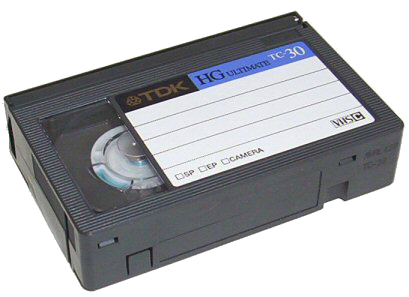

Для чего нужна оцифровка видео?

Оцифровка видео и аудио – это процесс перевода аудио- и видеозаписи с аудио- и видеокассеты в цифровой файл для дальнейшего хранения, конвертации, обработки и другого использования.
Чаще всего видеокассеты оцифровывают, чтобы сохранить видеозапись: с каждым просмотром видеозапись на кассете все больше портится. Это происходит из-за несовершенства технологии хранения информации на видеокассетах: пленка со временем размагничивается, лента растягивается, теряется синхронизация видео, появляются полосы, пропадает четкость изображения, ухудшается звук.
В последние годы оцифровка видеокассет становится все более актуальной услугой: в продаже уже нет видеомагнитофонов, на которых можно просмотреть записи, а события, которые запечатлены на этих кассетах, хочется сохранить в памяти на долгие годы…